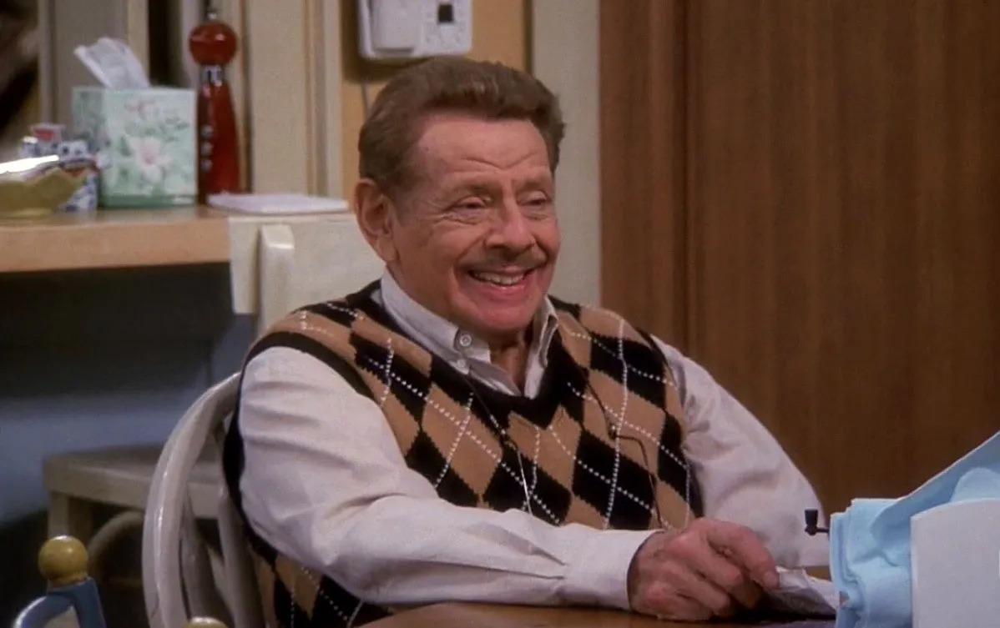

"King of Queens" throws you into Queens, New York, with Doug Heffernan, a cool delivery guy, and his fiery wife, Carrie, a secretary. They're all about navigating the everyday rollercoaster of love, life, and marriage, with some family drama tossed in. It's a laugh-packed look at regular life in the big city!
CharactersDoug HeffernanPlayed by: Kevin James Aeryn Sun Played by: Carrie Heffernan Arthur Spooner  Played by: Jerry Stiller |